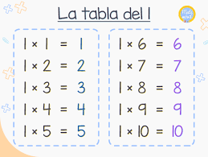

¿Qué son las tablas de multiplicar?
Las tablas de multiplicar son una herramientática matemática fundamental que permite a los estudiantes aprender y memorizar las operaciones de multiplicación. Conocer las tablas de multiplicar es esencial para realizar cálculos matemáticos de manera rápida y precisa.
Las tablas de multiplicar no solo son útiles para realizar cálculos matemáticos en el aula, sino que también tienen aplicaciones prácticas en la vida cotidiana. Por ejemplo, al hacer compras, es necesario calcular el costo total de varios artículos multiplicando el precio por la cantidad. En la cocina, las recetas a menudo requieren la multiplicación de fracciones para ajustar las porciones. En el trabajo, las tablas de multiplicar pueden ser útiles para calcular el tiempo o el costo de tareas repetitivas.
Ejemplos de tablas de multiplicar
Tabla del 2
| 2 x 1 | 2 |
|---|---|
| 2 x 2 | 4 |
| 2 x 3 | 6 |
| 2 x 4 | 8 |
| 2 x 5 | 10 |
Tabla del 5
| 5 x 1 | 5 |
|---|---|
| 5 x 2 | 10 |
| 5 x 3 | 15 |
| 5 x 4 | 20 |
| 5 x 5 | 25 |
Consejos para memorizar las tablas de multiplicar
- Utiliza la técnica de la repetición: practica escribir y recitar las tablas de multiplicar regularmente.
- Juega juegos interactivos como "Memory" o "Concentración" utilizando las tablas de multiplicar.
- Asocia cada número con una imagen o una palabra que te sea fácil de recordar. Por ejemplo, puedes asociar el número 6 con un elefante, ya que ambos tienen una trompa larga.
Relación de las tablas de multiplicar con otros temas matemáticos
Las tablas de multiplicar son la base de muchos otros conceptos matemáticos. Por ejemplo, la división es la operación inversa de la multiplicación, y el conocimiento de las tablas de multiplicar es esencial para aprender a dividir. Las fracciones y las proporciones también están relacionadas con las tablas de multiplicar, ya que a menudo se requiere multiplicar fracciones para encontrar una solución.
Preguntas de práctica y ejercicios
Practica tus habilidades de memorización y cálculo con estas preguntas y ejercicios:
- ¿Cuál es el resultado de 7 x 8?
- Completa la tabla del 4:
- Si una pizza se divide en 8 rebanadas iguales, ¿cuántas rebanadas habrá si se divide en 4 partes iguales?
- Resuelve la siguiente operación: 3/4 x 8/9
Tabla del 4
| 4 x 1 | 4 |
|---|---|
| 4 x 2 | 8 |
| 4 x 3 | 12 |
| 4 x 4 | 16 |
Además de utilizar esta herramienta, existen numerosas formas entretenidas y eficaces de aprender las tablas de multiplicar. Por ejemplo, puedes jugar juegos en línea que te permitan practicar tus habilidades, participar en actividades en grupo que fomenten la colaboración y el aprendizaje cooperativo, o realizar ejercicios prácticos que te ayuden a consolidar tus conocimientos. ¡Aprender las tablas de multiplicar no tiene por qué ser aburrido! Aprovecha estas oportunidades para divertirte mientras te conviertes en un experto en matemáticas.